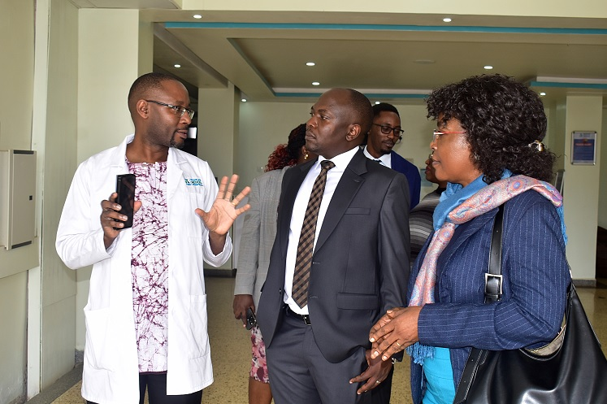
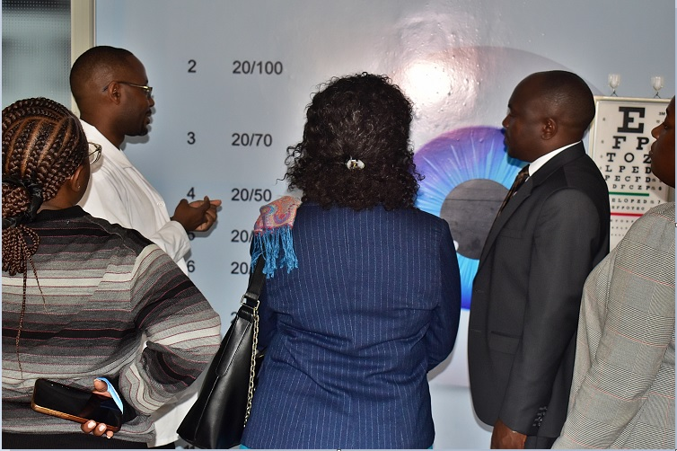
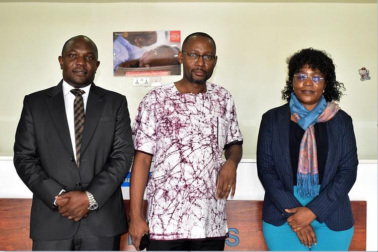
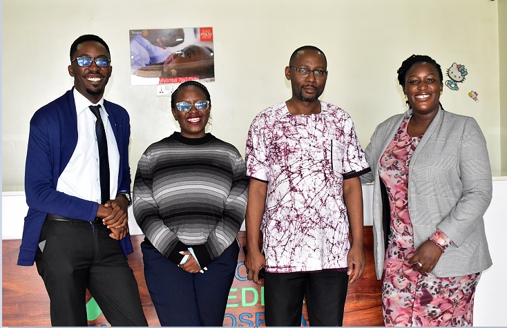
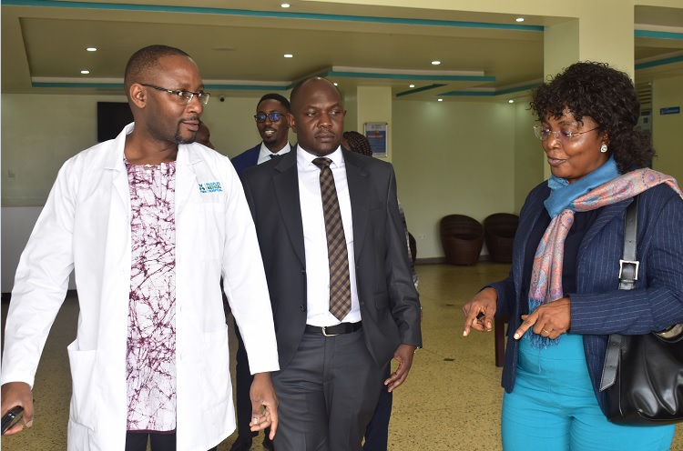

VISITORS POUR IN: Mengo Hospital Leadership Applauds People’s Medical Hospital

Dr. Frank Ndugga (left) guides the delegation from Mengo Hospital through the new facility.GAYAZA — Following the high-profile commissioning by the Katikkiro of Buganda last week, People’s Medical Hospital has continued to attract key stakeholders in the medical fraternity.
Today, the Executive Director of Mengo Hospital led a high-level team of medical staff to Gayaza to congratulate Dr. Frank Ndugga and his team on the successful launch of the facility.
The visiting delegation from Mengo hospital has been amazed by what they have seen. Dr. Nsingo Simon Peter told Enjuba Ya Kasangati reporters that he has been moved by the level of equipment and professional staff now available in the community.
— Dr. Nsingo Simon Peter, Mengo Hospital

Dr. Frank Ndugga showing the visitors an eye care chart.Advanced Facilities & Specialized Wards
Dr. Frank Ndugga showed the doctors around the hospital, highlighting the aerobics room for pregnant mothers, children’s ward, and well-equipped laboratories. He noted that the growth from a single room clinic to a referral center allows the institution to serve generations to come.
 Dr. Frank Ndugga handling a patient in the children's wing.
Dr. Frank Ndugga handling a patient in the children's wing.
This landmark visit follows the commissioning by Owek. Charles Peter Mayiga last week, an event that introduced a vital landmark for the residents of Gayaza, Busukuma, Manyangwa-Nakwero, and Kasangati.
PHOTO GALLERY



